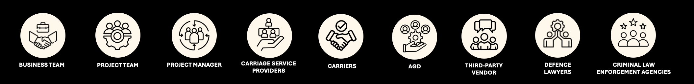
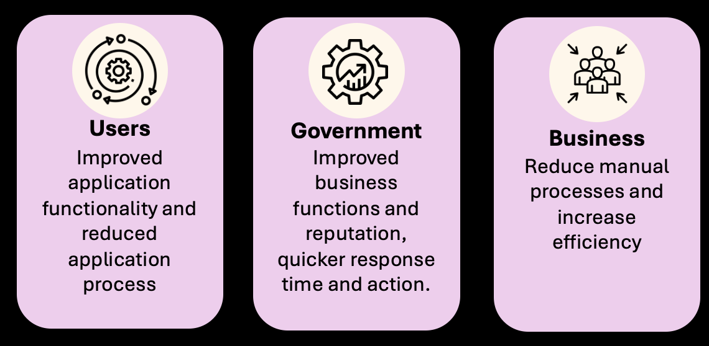

Telecommunications Intercept Warrants Uplift
| Background
My project is to deliver business analyst (BA) artifacts to the third-party vendor to create a Power Platform
application for the Telecommunications (Interception and Access) Warrants (TI Warrants) business team.
TI warrants assist with applications based on the Telecommunications (Interception and Access) Act 1979 (TIA
Act) and the Surveillances Devices Act 2004 (SD Act). They receive hundreds of applications and require a
system that can help support management needs, capture information, and allow for a collaborative work
environment among external agencies.
The uplift of TI Warrants will assist the business area in day-to-day tasks and help with the increasing number
of warrants. It will ease workload and assist managers with resource allocation, through the data and
statistics Power Platform can provide.
| Goals
The objective of the project is to be able to provide the vendor with documentation that Is detailed and well
thought out. In order for the final product to meet all business needs and requirements.
The goals are:
| Stakeholders
The project consisted of various external and internal stakeholders.
| Activities
My responsibilities for the project were to deliver the following artifacts:
| Outcome
Reduce manual processes by replacing them with more automated processes to provide flexible and rapid responses to requests Efficient and clear transition from current to new system through detailed and effective documentation and communication to ensure improved user experience and accessibility
| Impact
The impact for the project will benefit various stakeholders of the project. The main goal for the project was to improve everyday business processes for the team and reduce the workload. With the uplift to the new system they can improve processes and the system is upgraded to fit the ICT strategy.